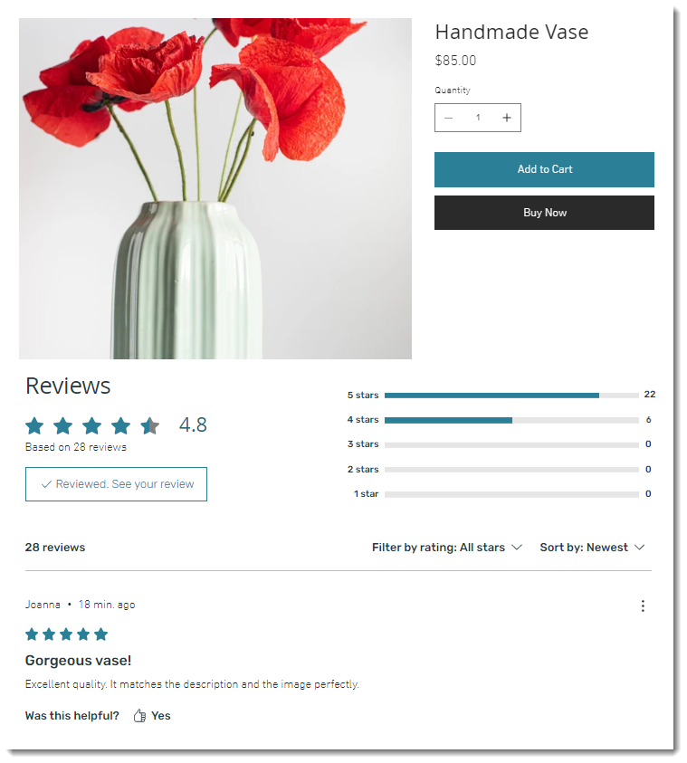

Case Study · 04
Wix Reviews Widget
Building Wix's first-party reviews solution — a fully customizable widget that serves millions of store owners and their customers.
Background
Wix is a cloud-based web development platform used by over 200 million people worldwide. Its eCommerce offering lets anyone build and run an online store — but until this project, store owners had to rely on third-party apps to collect and display product reviews.
The experience was fragmented, often off-brand, and frustrating to set up. Store owners kept asking for something better. This project was the answer.
The Problem
Third-party apps weren't good enough
Store owners on Wix had two options: use a third-party reviews app from the App Market, or go without. Both were bad. Third-party apps were hard to integrate, offered limited customization, and never truly matched a site's design.
"We want a product reviews application that has the look and feel of Wix."
— Direct user feedback from Wix communityUsers weren't just complaining about aesthetics. The friction of setting up external tools meant many store owners simply didn't collect reviews at all — leaving a huge trust signal off the table.

Research
Learning from the best in the industry
Before designing anything, I mapped the competitive landscape across three categories: website builders (Squarespace, GoDaddy), dedicated review platforms (Yotpo, Trustpilot), and major e-commerce players. This gave us a clear picture of what users expect — and where we could do better.

From this research I identified the core conventions every reviews experience needs, then used that as a scope map to plan exactly what we'd build:

User Flow
Two actors, one connected system
The reviews product spans two very different user journeys. The Site Owner adds and customizes the widget; the Buyer purchases a product and later submits a review. Getting both flows right — and making sure they connect cleanly — was central to the design.

Design Process
From wireframe to final design
I started with low-fidelity wireframes to establish the information hierarchy and layout of the reviews section on a product page. Once the structure was validated with the team, I moved into high-fidelity — a clean, fully functional widget that feels native to any Wix store.

The Widget
Fully customizable. Truly on-brand.
The reviews widget was designed with three customization tabs — Display, Design, and Layout — giving store owners full control over what appears and how it looks. Every setting was built to feel natural within the Wix Editor, not bolted on.

The result: a widget that seamlessly matches any store's brand, with sorting, filtering, star breakdowns, and a "Write a review" CTA — all configurable without writing a line of code.


Entry Points
Two ways in, one great experience
Store owners can discover and add the Reviews widget through either the Plugins panel directly on the product page, or from the App Market in the dashboard sidebar. Both paths lead to the same fully customizable widget — we made sure neither felt like a dead end.

Business Manager
Reviews as a first-class feature
Beyond the widget itself, we needed to give store owners a place to manage their reviews centrally. The Business Manager gained a dedicated Reviews tab — a new addition to the dashboard navigation — where owners can see all incoming reviews, approve or reject them, and track activity at a glance.


Release Plan
A phased rollout to protect core KPIs
Reviews touch critical eCommerce metrics — conversion rates, session time, trust signals. We designed the rollout in three defensive A/B phases to ensure the new widget lifted (or at minimum didn't harm) the numbers that matter.
Phase 1
New users — 50%
Introduced to new users only. Defensive A/B test to catch any critical issues before reaching existing customers.
2 weeksPhase 2
Existing users — 50%
Expanded to half of existing users. KPIs monitored closely for impact on conversion and engagement.
+2 weeksPhase 3
Full rollout — 100%
Complete rollout to all users after KPIs remained stable and positive feedback was confirmed.
+3 weeksThe Result
One widget. Every store.
The final product works across web and mobile, integrates with the Business Manager, and sends automated emails to buyers post-purchase — creating a complete, closed-loop reviews ecosystem native to Wix.

Community
The response said it all
When the Reviews widget launched, the Wix community forum lit up. Store owners who had been asking for this for years finally had what they needed — natively, inside the platform they already used.

Impact
First-rollout results
All core KPIs remained stable across all three rollout phases. Positive user feedback validated the product direction.